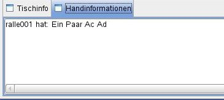
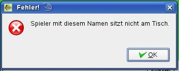

|
 |
In diesem Fenster wird angezeigt welche Hand der Spieler momentan hält. Dabei wird selbstverständlich die beste Hand aus den Poket- und den Boardkarten gebildet.
Wird dabei die folgende Fehlermeldung angezeigt
|
 |
so wurde in den Benutzervorgaben kein oder ein Spielername vorgegeben der nicht am Tisch sitzt.